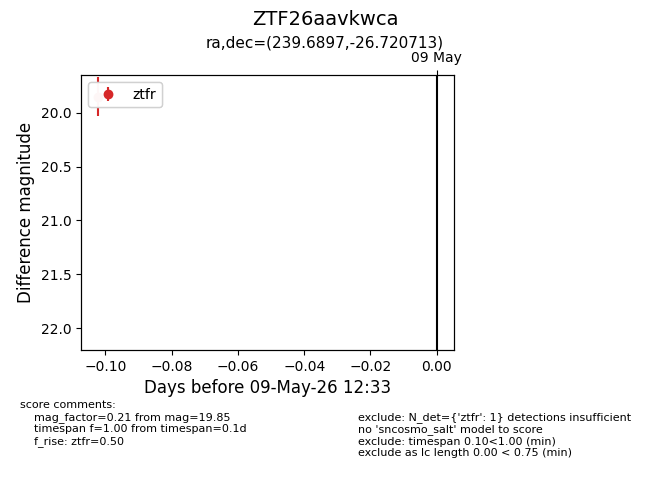
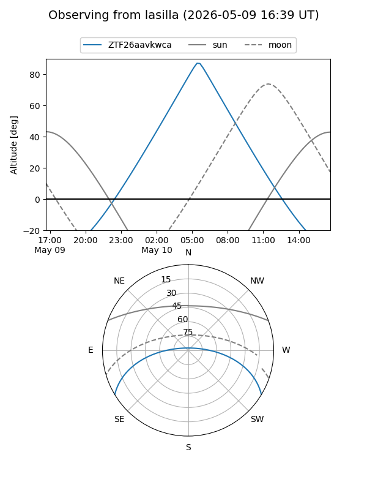
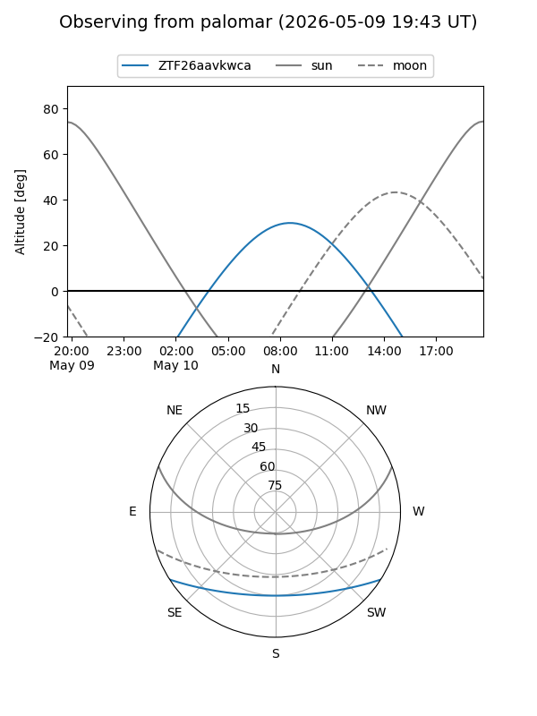

ZTF26aavkwca
Target ZTF26aavkwca at 2026-05-09 12:34
Aliases and brokers:
FINK: link
Lasair: link
ALeRCE: link
alt names
ZTF26aavkwca (ztf,fink_ztf)
Coordinates:
equatorial (ra, dec) = 239.6897,-26.72071
equatorial (HMS+DMS) = 15:58:45.54,-26:43:14.57
galactic (l, b) = (346.7527,+19.80633)
Flags:
Photometry:
last ztfr=19.85
1 ztfr detections
Lightcurve

Visibility


Additional plots